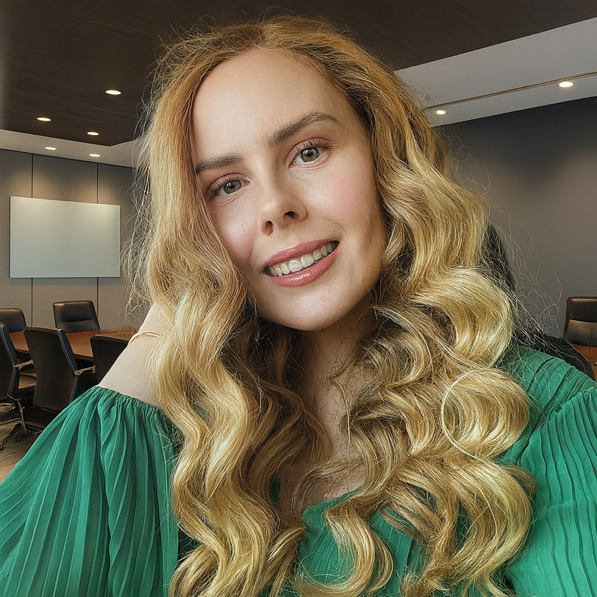

We built AI Ally because AI is eating every job —
and most Australian organisations are sleepwalking into it.
We exist to change that. One embedded graduate at a time.
Who's behind it

Anna Paige — Founder & CEO
Operator, not a consultant. Melbourne-based (Newport). Founder & CEO of Beyond All Abilities and One Care — a Victorian NDIS disability services provider caring for 17+ participants and a team of staff. Built AI Ally after embedding AI inside her own business, then informally inside a local school, and realising no one else was offering this on-site at a price real organisations could afford.
Anna's background is unusual — and it's exactly why AI Ally works the way it does.
For seven years she was the Virtual Independent Executive Assistant to a Global Director at Accenture Strategy, supporting a leader who ran 300+ resources across high-stakes M&A and Private Equity engagements in the USA, UK, and Australia. She operationalised executive functions across three continents, managed calendars and deal cadences across time zones, and sat adjacent to some of the most demanding enterprise strategy work happening in the market. That seven-year front-row seat to Tier-1 consulting is where the AI Ally playbook was quietly absorbed — the discipline, the frameworks, the bar for what "actually delivered" looks like.
In 2023 Anna founded Beyond All Abilities and One Care, her own NDIS-registered care facility in Melbourne's inner west. She runs it end-to-end: 17 participants, four full-time employees, person-centred care plans, compliance, stakeholder liaison, the lot. Along the way she earned a Diploma of Community Services and a Certificate IV in Disability to complement her prior Certificate III in Business Administration (Legal).
Eighteen months ago she started embedding AI into the business the hard way — mapping workflows, picking tools, writing her own AI & client-data policy aligned to the NDIS Quality and Safeguards framework, training her team, and measuring the time it gave back to frontline staff. Support coordinators got two hours of their week back. Rostering became a ten-minute task instead of a half-day slog. NDIS progress-report drafting dropped from ninety minutes to fifteen. A university consulting club even provided pro-bono advisory help to sharpen the funding-utilisation side.
Word travelled. A local independent school asked if Anna could do the same thing for them — and she did, informally, over a handful of after-hours visits. She wrote their AI acceptable-use policy, set up Copilot for their teachers, and ran a staff training session on a Saturday morning. The principal asked who else she could recommend. Anna looked around and realised: there wasn't anyone. Not at a price a school or a small business could actually afford. Not on-site. Not in a way that actually stuck after the consultant left.
So she built AI Ally.
"Every engagement should end with a thank-you note. That's the bar. I built this because I lived the problem — I know what it feels like to be a CEO trying to 'do AI' with no one in the building who actually knows how. My job now is to make sure every Ally succeeds, every client sees measurable value, and every deployment actually lands — properly."
— Anna Paige, Founder & CEO
The founding team
Anna is backed by a small, deliberately senior founding team of operators and strategists — most of whom have day jobs and contribute to AI Ally in an advisory, curriculum, and strategic capacity. Between them, the founding team's prior experience includes:
- Ex-McKinsey & BCG — former engagement managers on Tier-1 post-merger integration and operating-model programs across Australian energy, financial services, and logistics
- Ex-Accenture Strategy — former National Practice Leads for AI Services and Private Equity due diligence (Growth Markets), with deal experience for Carlyle Group and KKR
- Harvard University — Masters graduates (one summa cum laude, Harvard Medal recipient) from the Business School and the Graduate School
- ASX-listed enterprise — current Strategy GM at an ASX-listed energy retailer, accountable for AI readiness, future operating-model design, and governance of Tier-1 McKinsey & BCG post-merger integration workstreams
- NDIS & education sectors — founding operator (Anna) with first-hand experience deploying AI inside a disability services provider and a Victorian independent school
- AI & Quantum research — active Masters in Artificial Intelligence and Quantum Applications (University of Sussex, 100% scholarship) · Certified Quantum Specialist (Australian Computer Society) · Subject Matter Expert to the Australian Quantum Alliance (Tech Council of Australia) and IEEE
- $240M+ of delivered enterprise value across the founding team's prior consulting engagements at Foxtel, Aus Gas Networks, Alinta Energy, Bupa, Telstra, NBN, Suncorp, Woolworths, and Worley
The founding team is deliberately not plastered across the website — most hold senior roles at ASX-listed or Big-4 employers and contribute to AI Ally in their personal capacity. What matters for clients is that the playbook every Ally runs on the ground was architected by people who have delivered this work at enterprise scale, for enterprise prices — and who have chosen to make it available to Australian schools and SMEs at $89/hr + GST.
Enterprise playbooks. Small-business prices. On-site, on day one. That's the arbitrage AI Ally exists to close.